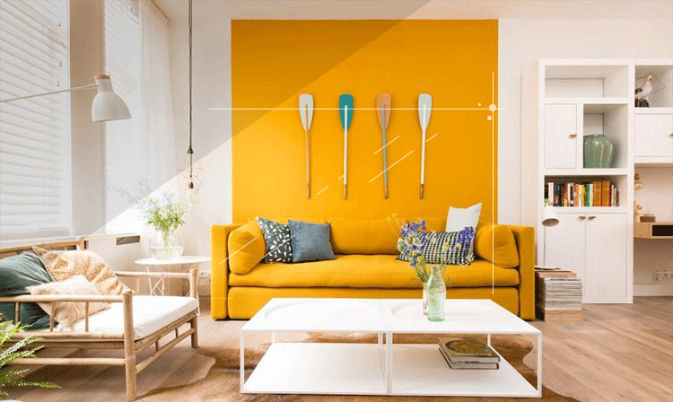
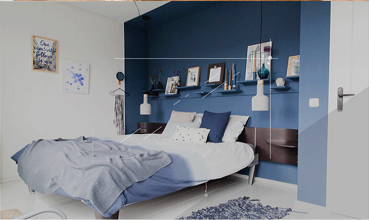
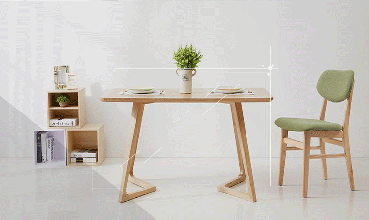

<!--
  Generated template for the MyhomePage page.

  See http://ionicframework.com/docs/components/#navigation for more info on
  Ionic pages and navigation.
-->
<!-- <ion-header>

  <ion-navbar>
    <ion-title>myhome</ion-title>
  </ion-navbar>

</ion-header> -->


<ion-content>
   <div class="div1">
     
     <div class="div2"><h5>明媚</h5><h5>在家中绽放</h5><span>#灵感#壁咚女人心#个性色彩</span></div>
   </div>
   <div class="div1">
    
    <div class="div2"><h5>蓝白</h5><h5>交织的梦境</h5><span>#灵感#个性色彩#为青春造势</span></div>
  </div>
  <div class="div1">
    
    <div class="div2"><h5>他</h5><h5>夏了夏天</h5><span>#灵感#宜家#小清新</span></div>
  </div>
</ion-content>
